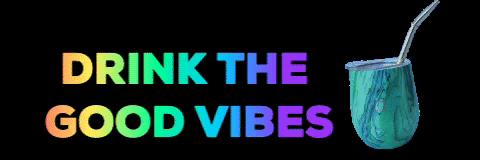

Yerba mate
Yerba Mate
index
coffee
mate
water
Yerba Mate is a sophisticated beveraged
What is Yerba Mate?
Yerba Mate is an herb found in the jungles of south America. For generations, it has been used to focus and energize those who harness its powers. It is rich in caffeine and vitamins.
Required ingredients
- Yerba Mate
- Hot Water
- French Press, Gourd, or other brewing equiptment
- Boil water
- Add Yerba Mate to container
- Pour hot water over Mate (it doesn't need to be boiling yet)
- Wait a few moments
- If using a French press, filter and serve like tea
- If using a gourd, drink as is
- Enjoy with friends

Enjoy